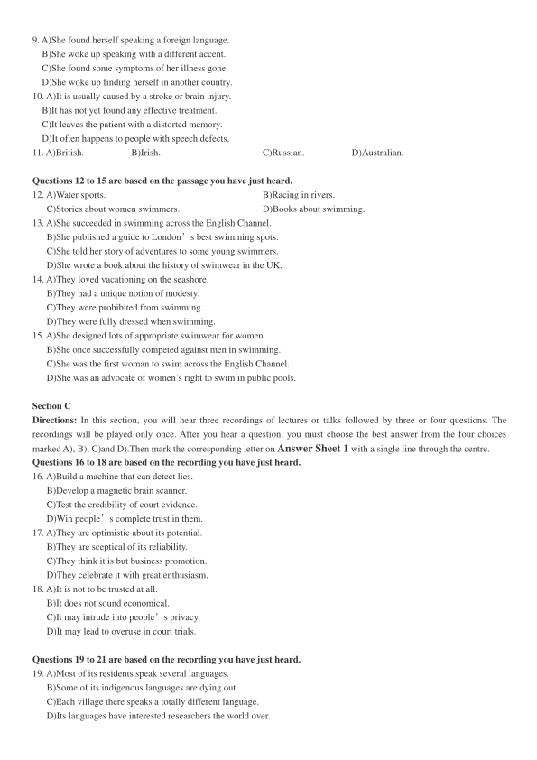
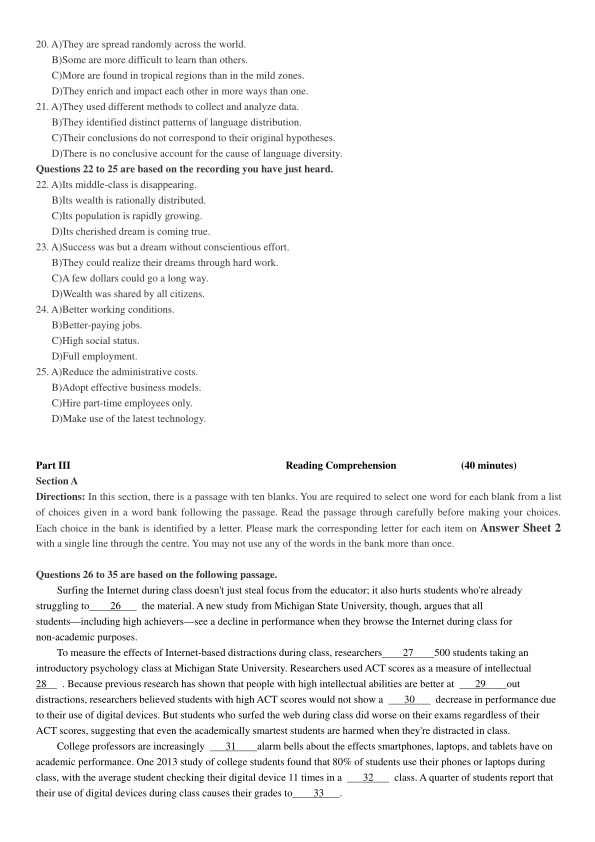
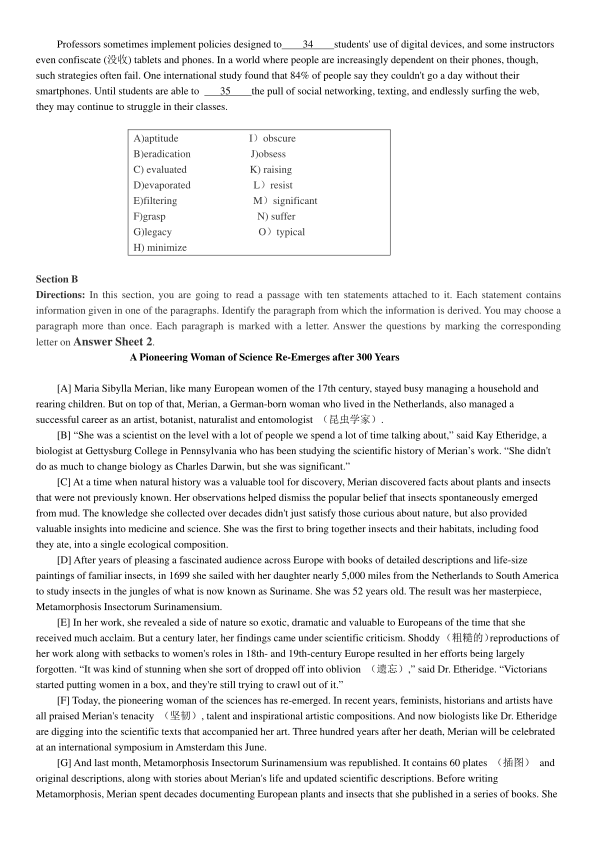

第 1 / 8 页

2018 年12 月大学英语六级考试真题（第2 套）
Part I
Writing
(30 minutes)
Directions: For this part, you are allowed 30 minutes to write an essay on how to balance job responsibilities and
personal interests. You should write at least 150 words but no more than 200 words.
___________________________________________________________________________________________________
___________________________________________________________________________________________________
___________________________________________________________________________________________________
Part II
Listening Comprehension
(30 minutes)
Section A
Directions: In this section, you will hear two long conversations At the end of each conversation, you will hear four
questions. Both the conversation and the questions will be spoken only once. After you hear a question, you must choose the
best answer from the four choices marked A), B), C) and D). Then mark the corresponding letter on Answer Sheet 1 with
a single line through the centre.
Questions1 to 4 are based on the conversation you have just heard.
1. A)Stop worrying about him.
B)Keep away from the statue.
C)Take a picture of him.
D)Put on a smile for the photo.
2. A)Gaining great fame on the Internet.
B)Publishing a collection of his photos.
C)Collecting the best photos in the world.
D)Becoming a professional photographer.
3. A)Surfing various websites and collecting photos.
B)Editing his pictures and posting them online.
C)Following similar accounts to compare notes.
D)Studying the pictures in popular social media.
4. A)They are far from satisfactory.
B)They are mostly taken by her mom.
C)They make an impressive album.
D)They record her fond memories.
Questions 5 to 8 are based on the conversation you have just heard.
5. A)A journal reporting the latest progress in physics.
B)An introductory course of modern physics.
C)An occasion for physicists to exchange ideas.
D)A series of interviews with outstanding physicists.
6. A)The future of the physical world.
B)The origin of the universe.
C)Sources of radiation.
D)Particle theory.
7. A)How matter collides with anti-matter.
B)Whether the universe will turn barren.
C)Why there exists anti-matter.
D)Why there is a universe at all.
8. A)Matter and anti-matter are opposites of each other.
B)Anti-matter allowed humans to come into existence.
C)The universe formed due to a sufficient amount of matter.
D)Anti-matter exists in very high-temperature environments.
Section B
Directions: In this section, you will hear two passages. At the end of each passage, you will hear three or four questions.
Both the passage and the questions will be spoken only once. After you hear a question, you must choose the best answer
from the four choices marked A), B), C)and D). Then mark the corresponding letter on Answer Sheet 1 with a single line
through the centre.
Questions 9 to 11 are based on the passage you have just heard.
查看 / 复制本页文字
2018 年12 月大学英语六级考试真题（第2 套） Part I Writing (30 minutes) Directions: For this part, you are allowed 30 minutes to write an essay on how to balance job responsibilities and personal interests. You should write at least 150 words but no more than 200 words. ___________________________________________________________________________________________________ ___________________________________________________________________________________________________ ___________________________________________________________________________________________________ Part II Listening Comprehension (30 minutes) Section A Directions: In this section, you will hear two long conversations At the end of each conversation, you will hear four questions. Both the conversation and the questions will be spoken only once. After you hear a question, you must choose the best answer from the four choices marked A), B), C) and D). Then mark the corresponding letter on Answer Sheet 1 with a single line through the centre. Questions1 to 4 are based on the conversation you have just heard. 1. A)Stop worrying about him. B)Keep away from the statue. C)Take a picture of him. D)Put on a smile for the photo. 2. A)Gaining great fame on the Internet. B)Publishing a collection of his photos. C)Collecting the best photos in the world. D)Becoming a professional photographer. 3. A)Surfing various websites and collecting photos. B)Editing his pictures and posting them online. C)Following similar accounts to compare notes. D)Studying the pictures in popular social media. 4. A)They are far from satisfactory. B)They are mostly taken by her mom. C)They make an impressive album. D)They record her fond memories. Questions 5 to 8 are based on the conversation you have just heard. 5. A)A journal reporting the latest progress in physics. B)An introductory course of modern physics. C)An occasion for physicists to exchange ideas. D)A series of interviews with outstanding physicists. 6. A)The future of the physical world. B)The origin of the universe. C)Sources of radiation. D)Particle theory. 7. A)How matter collides with anti-matter. B)Whether the universe will turn barren. C)Why there exists anti-matter. D)Why there is a universe at all. 8. A)Matter and anti-matter are opposites of each other. B)Anti-matter allowed humans to come into existence. C)The universe formed due to a sufficient amount of matter. D)Anti-matter exists in very high-temperature environments. Section B Directions: In this section, you will hear two passages. At the end of each passage, you will hear three or four questions. Both the passage and the questions will be spoken only once. After you hear a question, you must choose the best answer from the four choices marked A), B), C)and D). Then mark the corresponding letter on Answer Sheet 1 with a single line through the centre. Questions 9 to 11 are based on the passage you have just heard.
第 2 / 8 页

9. A)She found herself speaking a foreign language.
B)She woke up speaking with a different accent.
C)She found some symptoms of her illness gone.
D)She woke up finding herself in another country.
10. A)It is usually caused by a stroke or brain injury.
B)It has not yet found any effective treatment.
C)It leaves the patient with a distorted memory.
D)It often happens to people with speech defects.
11. A)British.
B)Irish.
C)Russian.
D)Australian.
Questions 12 to 15 are based on the passage you have just heard.
12. A)Water sports.
B)Racing in rivers.
C)Stories about women swimmers.
D)Books about swimming.
13. A)She succeeded in swimming across the English Channel.
B)She published a guide to London’s best swimming spots.
C)She told her story of adventures to some young swimmers.
D)She wrote a book about the history of swimwear in the UK.
14. A)They loved vacationing on the seashore.
B)They had a unique notion of modesty.
C)They were prohibited from swimming.
D)They were fully dressed when swimming.
15. A)She designed lots of appropriate swimwear for women.
B)She once successfully competed against men in swimming.
C)She was the first woman to swim across the English Channel.
D)She was an advocate of women’s right to swim in public pools.
Section C
Directions: In this section, you will hear three recordings of lectures or talks followed by three or four questions. The
recordings will be played only once. After you hear a question, you must choose the best answer from the four choices
marked A), B), C)and D).Then mark the corresponding letter on Answer Sheet 1 with a single line through the centre.
Questions 16 to 18 are based on the recording you have just heard.
16. A)Build a machine that can detect lies.
B)Develop a magnetic brain scanner.
C)Test the credibility of court evidence.
D)Win people’s complete trust in them.
17. A)They are optimistic about its potential.
B)They are sceptical of its reliability.
C)They think it is but business promotion.
D)They celebrate it with great enthusiasm.
18. A)It is not to be trusted at all.
B)It does not sound economical.
C)It may intrude into people’s privacy.
D)It may lead to overuse in court trials.
Questions 19 to 21 are based on the recording you have just heard.
19. A)Most of its residents speak several languages.
B)Some of its indigenous languages are dying out.
C)Each village there speaks a totally different language.
D)Its languages have interested researchers the world over.
查看 / 复制本页文字
9. A)She found herself speaking a foreign language. B)She woke up speaking with a different accent. C)She found some symptoms of her illness gone. D)She woke up finding herself in another country. 10. A)It is usually caused by a stroke or brain injury. B)It has not yet found any effective treatment. C)It leaves the patient with a distorted memory. D)It often happens to people with speech defects. 11. A)British. B)Irish. C)Russian. D)Australian. Questions 12 to 15 are based on the passage you have just heard. 12. A)Water sports. B)Racing in rivers. C)Stories about women swimmers. D)Books about swimming. 13. A)She succeeded in swimming across the English Channel. B)She published a guide to London’s best swimming spots. C)She told her story of adventures to some young swimmers. D)She wrote a book about the history of swimwear in the UK. 14. A)They loved vacationing on the seashore. B)They had a unique notion of modesty. C)They were prohibited from swimming. D)They were fully dressed when swimming. 15. A)She designed lots of appropriate swimwear for women. B)She once successfully competed against men in swimming. C)She was the first woman to swim across the English Channel. D)She was an advocate of women’s right to swim in public pools. Section C Directions: In this section, you will hear three recordings of lectures or talks followed by three or four questions. The recordings will be played only once. After you hear a question, you must choose the best answer from the four choices marked A), B), C)and D).Then mark the corresponding letter on Answer Sheet 1 with a single line through the centre. Questions 16 to 18 are based on the recording you have just heard. 16. A)Build a machine that can detect lies. B)Develop a magnetic brain scanner. C)Test the credibility of court evidence. D)Win people’s complete trust in them. 17. A)They are optimistic about its potential. B)They are sceptical of its reliability. C)They think it is but business promotion. D)They celebrate it with great enthusiasm. 18. A)It is not to be trusted at all. B)It does not sound economical. C)It may intrude into people’s privacy. D)It may lead to overuse in court trials. Questions 19 to 21 are based on the recording you have just heard. 19. A)Most of its residents speak several languages. B)Some of its indigenous languages are dying out. C)Each village there speaks a totally different language. D)Its languages have interested researchers the world over.
第 3 / 8 页

20. A)They are spread randomly across the world.
B)Some are more difficult to learn than others.
C)More are found in tropical regions than in the mild zones.
D)They enrich and impact each other in more ways than one.
21. A)They used different methods to collect and analyze data.
B)They identified distinct patterns of language distribution.
C)Their conclusions do not correspond to their original hypotheses.
D)There is no conclusive account for the cause of language diversity.
Questions 22 to 25 are based on the recording you have just heard.
22. A)Its middle-class is disappearing.
B)Its wealth is rationally distributed.
C)Its population is rapidly growing.
D)Its cherished dream is coming true.
23. A)Success was but a dream without conscientious effort.
B)They could realize their dreams through hard work.
C)A few dollars could go a long way.
D)Wealth was shared by all citizens.
24. A)Better working conditions.
B)Better-paying jobs.
C)High social status.
D)Full employment.
25. A)Reduce the administrative costs.
B)Adopt effective business models.
C)Hire part-time employees only.
D)Make use of the latest technology.
Part III
Reading Comprehension
(40 minutes)
Section A
Directions: In this section, there is a passage with ten blanks. You are required to select one word for each blank from a list
of choices given in a word bank following the passage. Read the passage through carefully before making your choices.
Each choice in the bank is identified by a letter. Please mark the corresponding letter for each item on Answer Sheet 2
with a single line through the centre. You may not use any of the words in the bank more than once.
Questions 26 to 35 are based on the following passage.
Surfing the Internet during class doesn't just steal focus from the educator; it also hurts students who're already
struggling to
26
the material. A new study from Michigan State University, though, argues that all
students—including high achievers—see a decline in performance when they browse the Internet during class for
non-academic purposes.
To measure the effects of Internet-based distractions during class, researchers
27
500 students taking an
introductory psychology class at Michigan State University. Researchers used ACT scores as a measure of intellectual
28
. Because previous research has shown that people with high intellectual abilities are better at
29
out
distractions, researchers believed students with high ACT scores would not show a
30
decrease in performance due
to their use of digital devices. But students who surfed the web during class did worse on their exams regardless of their
ACT scores, suggesting that even the academically smartest students are harmed when they're distracted in class.
College professors are increasingly
31
alarm bells about the effects smartphones, laptops, and tablets have on
academic performance. One 2013 study of college students found that 80% of students use their phones or laptops during
class, with the average student checking their digital device 11 times in a
32
class. A quarter of students report that
their use of digital devices during class causes their grades to
33
.
查看 / 复制本页文字
20. A)They are spread randomly across the world. B)Some are more difficult to learn than others. C)More are found in tropical regions than in the mild zones. D)They enrich and impact each other in more ways than one. 21. A)They used different methods to collect and analyze data. B)They identified distinct patterns of language distribution. C)Their conclusions do not correspond to their original hypotheses. D)There is no conclusive account for the cause of language diversity. Questions 22 to 25 are based on the recording you have just heard. 22. A)Its middle-class is disappearing. B)Its wealth is rationally distributed. C)Its population is rapidly growing. D)Its cherished dream is coming true. 23. A)Success was but a dream without conscientious effort. B)They could realize their dreams through hard work. C)A few dollars could go a long way. D)Wealth was shared by all citizens. 24. A)Better working conditions. B)Better-paying jobs. C)High social status. D)Full employment. 25. A)Reduce the administrative costs. B)Adopt effective business models. C)Hire part-time employees only. D)Make use of the latest technology. Part III Reading Comprehension (40 minutes) Section A Directions: In this section, there is a passage with ten blanks. You are required to select one word for each blank from a list of choices given in a word bank following the passage. Read the passage through carefully before making your choices. Each choice in the bank is identified by a letter. Please mark the corresponding letter for each item on Answer Sheet 2 with a single line through the centre. You may not use any of the words in the bank more than once. Questions 26 to 35 are based on the following passage. Surfing the Internet during class doesn't just steal focus from the educator; it also hurts students who're already struggling to 26 the material. A new study from Michigan State University, though, argues that all students—including high achievers—see a decline in performance when they browse the Internet during class for non-academic purposes. To measure the effects of Internet-based distractions during class, researchers 27 500 students taking an introductory psychology class at Michigan State University. Researchers used ACT scores as a measure of intellectual 28 . Because previous research has shown that people with high intellectual abilities are better at 29 out distractions, researchers believed students with high ACT scores would not show a 30 decrease in performance due to their use of digital devices. But students who surfed the web during class did worse on their exams regardless of their ACT scores, suggesting that even the academically smartest students are harmed when they're distracted in class. College professors are increasingly 31 alarm bells about the effects smartphones, laptops, and tablets have on academic performance. One 2013 study of college students found that 80% of students use their phones or laptops during class, with the average student checking their digital device 11 times in a 32 class. A quarter of students report that their use of digital devices during class causes their grades to 33 .
第 4 / 8 页

Professors sometimes implement policies designed to
34
students' use of digital devices, and some instructors
even confiscate (没收) tablets and phones. In a world where people are increasingly dependent on their phones, though,
such strategies often fail. One international study found that 84% of people say they couldn't go a day without their
smartphones. Until students are able to
35
the pull of social networking, texting, and endlessly surfing the web,
they may continue to struggle in their classes.
A)aptitude
I）obscure
B)eradication
J)obsess
C) evaluated
K) raising
D)evaporated
L）resist
E)filtering
M）significant
F)grasp
N) suffer
G)legacy
O）typical
H) minimize
Section B
Directions: In this section, you are going to read a passage with ten statements attached to it. Each statement contains
information given in one of the paragraphs. Identify the paragraph from which the information is derived. You may choose a
paragraph more than once. Each paragraph is marked with a letter. Answer the questions by marking the corresponding
letter on Answer Sheet 2.
A Pioneering Woman of Science Re-Emerges after 300 Years
[A] Maria Sibylla Merian, like many European women of the 17th century, stayed busy managing a household and
rearing children. But on top of that, Merian, a German-born woman who lived in the Netherlands, also managed a
successful career as an artist, botanist, naturalist and entomologist （昆虫学家）.
[B] “She was a scientist on the level with a lot of people we spend a lot of time talking about,” said Kay Etheridge, a
biologist at Gettysburg College in Pennsylvania who has been studying the scientific history of Merian’s work. “She didn't
do as much to change biology as Charles Darwin, but she was significant.”
[C] At a time when natural history was a valuable tool for discovery, Merian discovered facts about plants and insects
that were not previously known. Her observations helped dismiss the popular belief that insects spontaneously emerged
from mud. The knowledge she collected over decades didn't just satisfy those curious about nature, but also provided
valuable insights into medicine and science. She was the first to bring together insects and their habitats, including food
they ate, into a single ecological composition.
[D] After years of pleasing a fascinated audience across Europe with books of detailed descriptions and life-size
paintings of familiar insects, in 1699 she sailed with her daughter nearly 5,000 miles from the Netherlands to South America
to study insects in the jungles of what is now known as Suriname. She was 52 years old. The result was her masterpiece,
Metamorphosis Insectorum Surinamensium.
[E] In her work, she revealed a side of nature so exotic, dramatic and valuable to Europeans of the time that she
received much acclaim. But a century later, her findings came under scientific criticism. Shoddy（粗糙的）reproductions of
her work along with setbacks to women's roles in 18th- and 19th-century Europe resulted in her efforts being largely
forgotten. “It was kind of stunning when she sort of dropped off into oblivion （遗忘）,” said Dr. Etheridge. “Victorians
started putting women in a box, and they're still trying to crawl out of it.”
[F] Today, the pioneering woman of the sciences has re-emerged. In recent years, feminists, historians and artists have
all praised Merian's tenacity （坚韧）, talent and inspirational artistic compositions. And now biologists like Dr. Etheridge
are digging into the scientific texts that accompanied her art. Three hundred years after her death, Merian will be celebrated
at an international symposium in Amsterdam this June.
[G] And last month, Metamorphosis Insectorum Surinamensium was republished. It contains 60 plates （插图）and
original descriptions, along with stories about Merian's life and updated scientific descriptions. Before writing
Metamorphosis, Merian spent decades documenting European plants and insects that she published in a series of books. She
查看 / 复制本页文字
Professors sometimes implement policies designed to 34 students' use of digital devices, and some instructors even confiscate (没收) tablets and phones. In a world where people are increasingly dependent on their phones, though, such strategies often fail. One international study found that 84% of people say they couldn't go a day without their smartphones. Until students are able to 35 the pull of social networking, texting, and endlessly surfing the web, they may continue to struggle in their classes. A)aptitude I）obscure B)eradication J)obsess C) evaluated K) raising D)evaporated L）resist E)filtering M）significant F)grasp N) suffer G)legacy O）typical H) minimize Section B Directions: In this section, you are going to read a passage with ten statements attached to it. Each statement contains information given in one of the paragraphs. Identify the paragraph from which the information is derived. You may choose a paragraph more than once. Each paragraph is marked with a letter. Answer the questions by marking the corresponding letter on Answer Sheet 2. A Pioneering Woman of Science Re-Emerges after 300 Years [A] Maria Sibylla Merian, like many European women of the 17th century, stayed busy managing a household and rearing children. But on top of that, Merian, a German-born woman who lived in the Netherlands, also managed a successful career as an artist, botanist, naturalist and entomologist （昆虫学家）. [B] “She was a scientist on the level with a lot of people we spend a lot of time talking about,” said Kay Etheridge, a biologist at Gettysburg College in Pennsylvania who has been studying the scientific history of Merian’s work. “She didn't do as much to change biology as Charles Darwin, but she was significant.” [C] At a time when natural history was a valuable tool for discovery, Merian discovered facts about plants and insects that were not previously known. Her observations helped dismiss the popular belief that insects spontaneously emerged from mud. The knowledge she collected over decades didn't just satisfy those curious about nature, but also provided valuable insights into medicine and science. She was the first to bring together insects and their habitats, including food they ate, into a single ecological composition. [D] After years of pleasing a fascinated audience across Europe with books of detailed descriptions and life-size paintings of familiar insects, in 1699 she sailed with her daughter nearly 5,000 miles from the Netherlands to South America to study insects in the jungles of what is now known as Suriname. She was 52 years old. The result was her masterpiece, Metamorphosis Insectorum Surinamensium. [E] In her work, she revealed a side of nature so exotic, dramatic and valuable to Europeans of the time that she received much acclaim. But a century later, her findings came under scientific criticism. Shoddy（粗糙的）reproductions of her work along with setbacks to women's roles in 18th- and 19th-century Europe resulted in her efforts being largely forgotten. “It was kind of stunning when she sort of dropped off into oblivion （遗忘）,” said Dr. Etheridge. “Victorians started putting women in a box, and they're still trying to crawl out of it.” [F] Today, the pioneering woman of the sciences has re-emerged. In recent years, feminists, historians and artists have all praised Merian's tenacity （坚韧）, talent and inspirational artistic compositions. And now biologists like Dr. Etheridge are digging into the scientific texts that accompanied her art. Three hundred years after her death, Merian will be celebrated at an international symposium in Amsterdam this June. [G] And last month, Metamorphosis Insectorum Surinamensium was republished. It contains 60 plates （插图）and original descriptions, along with stories about Merian's life and updated scientific descriptions. Before writing Metamorphosis, Merian spent decades documenting European plants and insects that she published in a series of books. She
第 5 / 8 页
began in her 20s, making textless, decorative paintings of flowers with insects. “Then she got really serious,” Dr. Etheridge
said. Merian started raising insects at home, mostly butterflies and caterpillars. “She would sit up all night until they came
out of the pupa （蛹）so she could draw them,” she said.
[H] The results of her decades' worth of careful observations were detailed paintings and descriptions of European
insects, followed by unconventional visuals and stories of insects and animals from a land that most at the time could only
imagine. It's possible Merian used a magnifying glass to capture the detail of the split tongues of
sphinx moths （斯芬克
斯飞蛾）depicted in the painting. She wrote that the two tongues combine to form one tube for drinking nectar （花蜜）.
Some criticized this detail later, saying there was just one tongue, but Merian wasn't wrong. She may have observed the
adult moth just as it emerged from its pupa.
For a brief moment during that stage of its life cycle, the tongue consists of
two tiny half-tubes before merging into one.
[I] It may not have been ladylike to depict a giant spider devouring a hummingbird, but when Merian did it at the turn
of the 18th century, surprisingly, nobody objected. Dr. Etheridge called it revolutionary. The image, which also contained
novel descriptions of ants, fascinated a European audience that was more concerned with the exotic story unfolding before
them than the gender of the person who painted it.
[J] “All of these things shook up their nice, neat little view,” Dr. Etheridge said. But later, people of the Victorian era
thought differently. Her work had been reproduced, sometimes incorrectly. A few observations were deemed impossible.
“She'd been called a silly woman for saying that a spider could eat a bird,” Dr. Etheridge said. But Henry Walter Bates, a
friend of Charles Darwin, observed it and put it in book in 1863, proving Merian was correct.
[K] In the same plate, Merian depicted and described leaf-cutter ants for the first time. “In America there are large ants
which can eat whole trees bare as a broom handle in a single night,” she wrote in the description. Merian noted how the ants
took the leaves below ground to their young. And she wouldn't have known this at the time, but the ants use the leaves to
farm fungi （菌类）underground to feed their developing babies.
[L] Merian was correct about the giant bird-eating spiders, ants building bridges with their bodies and other details. But
in the same drawing, she incorrectly lumped together army and leaf-cutter ants. And instead of showing just the typical pair
of eggs in a hummingbird nest, she painted four. She made other mistakes in Metamorphosis Insectorum Surinamensium as
well: not every caterpillar and butterfly matched.
[M] Perhaps one explanation for her mistakes is that she cut short her Suriname trip after getting sick, and completed
the book at home in Amsterdam. And errors are common among some of history's most-celebrated scientific minds, too.
“These errors no more invalidate Ms. Merian's work than do well-known misconceptions published by Charles Darwin or
Isaac Newton,” Dr. Etheridge wrote in a paper that argued that too many have wrongly focused on the mistakes of her work.
[N] Merian’s paintings inspired artists and ecologists. In an 1801 drawing from his book, General Zoology Amphibia,
George Shaw, an English botanist and zoologist, credited Merian for describing a frog in the account of her South American
expedition, and named the young tree frog after her in his portrayal of it. It wouldn't be fair to give Merian all the credit. She
received assistance naming plants, making sketches and referencing the work of others. Her daughters helped her color her
drawings.
[O] Merian also made note of the help she received from the natives of Suriname, as well as slaves or servants that
assisted her. In some instances she wrote moving passages that included her helpers in descriptions. As she wrote in her
description of the peacock flower, “The Indians, who are not treated well by their Dutch masters, use the seeds to abort their
children, so that they will not become slaves like themselves. The black slaves from Guinea and Angola have demanded to
be well treated, threatening to refuse to have children. In fact, they sometimes take their own lives because they are treated
so badly, and because they believe they will be born again, free and living in their own land. They told me this themselves.”
[P] Londa Schiebinger, a professor of the history of science at Stanford University, called this passage rather
astonishing. It's particularly striking centuries later when these issues are still prominent in public discussions about social
justice and women’s rights. “She was ahead of her time,” Dr. Etheridge said.
36. Merian was the first scientist to study a type of American ant.
37. The European audience was more interested in Merian's drawings than her gender.
38.Merian's masterpiece came under attack a century after its publication.
39. Merian’s mistakes in her drawings may be attributed to her shortened stay in South America.
查看 / 复制本页文字
began in her 20s, making textless, decorative paintings of flowers with insects. “Then she got really serious,” Dr. Etheridge said. Merian started raising insects at home, mostly butterflies and caterpillars. “She would sit up all night until they came out of the pupa （蛹）so she could draw them,” she said. [H] The results of her decades' worth of careful observations were detailed paintings and descriptions of European insects, followed by unconventional visuals and stories of insects and animals from a land that most at the time could only imagine. It's possible Merian used a magnifying glass to capture the detail of the split tongues of sphinx moths （斯芬克 斯飞蛾）depicted in the painting. She wrote that the two tongues combine to form one tube for drinking nectar （花蜜）. Some criticized this detail later, saying there was just one tongue, but Merian wasn't wrong. She may have observed the adult moth just as it emerged from its pupa. For a brief moment during that stage of its life cycle, the tongue consists of two tiny half-tubes before merging into one. [I] It may not have been ladylike to depict a giant spider devouring a hummingbird, but when Merian did it at the turn of the 18th century, surprisingly, nobody objected. Dr. Etheridge called it revolutionary. The image, which also contained novel descriptions of ants, fascinated a European audience that was more concerned with the exotic story unfolding before them than the gender of the person who painted it. [J] “All of these things shook up their nice, neat little view,” Dr. Etheridge said. But later, people of the Victorian era thought differently. Her work had been reproduced, sometimes incorrectly. A few observations were deemed impossible. “She'd been called a silly woman for saying that a spider could eat a bird,” Dr. Etheridge said. But Henry Walter Bates, a friend of Charles Darwin, observed it and put it in book in 1863, proving Merian was correct. [K] In the same plate, Merian depicted and described leaf-cutter ants for the first time. “In America there are large ants which can eat whole trees bare as a broom handle in a single night,” she wrote in the description. Merian noted how the ants took the leaves below ground to their young. And she wouldn't have known this at the time, but the ants use the leaves to farm fungi （菌类）underground to feed their developing babies. [L] Merian was correct about the giant bird-eating spiders, ants building bridges with their bodies and other details. But in the same drawing, she incorrectly lumped together army and leaf-cutter ants. And instead of showing just the typical pair of eggs in a hummingbird nest, she painted four. She made other mistakes in Metamorphosis Insectorum Surinamensium as well: not every caterpillar and butterfly matched. [M] Perhaps one explanation for her mistakes is that she cut short her Suriname trip after getting sick, and completed the book at home in Amsterdam. And errors are common among some of history's most-celebrated scientific minds, too. “These errors no more invalidate Ms. Merian's work than do well-known misconceptions published by Charles Darwin or Isaac Newton,” Dr. Etheridge wrote in a paper that argued that too many have wrongly focused on the mistakes of her work. [N] Merian’s paintings inspired artists and ecologists. In an 1801 drawing from his book, General Zoology Amphibia, George Shaw, an English botanist and zoologist, credited Merian for describing a frog in the account of her South American expedition, and named the young tree frog after her in his portrayal of it. It wouldn't be fair to give Merian all the credit. She received assistance naming plants, making sketches and referencing the work of others. Her daughters helped her color her drawings. [O] Merian also made note of the help she received from the natives of Suriname, as well as slaves or servants that assisted her. In some instances she wrote moving passages that included her helpers in descriptions. As she wrote in her description of the peacock flower, “The Indians, who are not treated well by their Dutch masters, use the seeds to abort their children, so that they will not become slaves like themselves. The black slaves from Guinea and Angola have demanded to be well treated, threatening to refuse to have children. In fact, they sometimes take their own lives because they are treated so badly, and because they believe they will be born again, free and living in their own land. They told me this themselves.” [P] Londa Schiebinger, a professor of the history of science at Stanford University, called this passage rather astonishing. It's particularly striking centuries later when these issues are still prominent in public discussions about social justice and women’s rights. “She was ahead of her time,” Dr. Etheridge said. 36. Merian was the first scientist to study a type of American ant. 37. The European audience was more interested in Merian's drawings than her gender. 38.Merian's masterpiece came under attack a century after its publication. 39. Merian’s mistakes in her drawings may be attributed to her shortened stay in South America.
第 6 / 8 页
40. Merian often sat up the whole night through to observe and draw insects.
41. Merian acknowledged the help she got from natives of South America.
42. Merian contributed greatly to people's better understanding of medicine and science.
43. Merian occasionally made mistakes in her drawings of insects and birds.
44. Now, Merian's role as a female forerunner in sciences has been re-established.
45.Merian made a long voyage to South America to study jungle insects over three centuries ago.
Section C
Directions: There are 2 passages in this section. Each passage is followed by some question or unfinished statements. For
each of them there are four choices marked A), B), C)and D). You should decide on the best choice and mark the
corresponding letter on Answer Sheet 2 with a single line through the centre.
Passage One
Questions 46 to 50 are based on the following passage.
While human achievements in mathematics continue to reach new levels of complexity, many of us who aren't
mathematicians at heart (or engineers by trade) may struggle to remember the last time we used calculus (微积分).
It’s a fact not lost on American educators, who amid rising math failure rates are debating how math can better meet
the real-life needs of students. Should we change the way math is taught in schools, or eliminate some courses entirely?
Andrew Hacker, Queens College political science professor, thinks that advanced algebra and other higher-level math
should be cut from curricula in favor of courses with more routine usefulness, like statistics.
“We hear on all sides that we're not teaching enough mathematics, and the Chinese are running rings around us,”
Hacker says. “I'm suggesting we're teaching too much mathematics to too many people…not everybody has to know
calculus. If you're going to become an aeronautical (航空的) engineer, fine. But most of us aren't.”
Instead, Hacker is pushing for more courses like the one he teaches at Queens College：Numeracy 101. There, his
students of “citizen statistics” learn to analyze public information like the federal budget and corporate reports. Such
courses, Hacker argues, are a remedy for the numerical illiteracy of adults who have completed high-level math like algebra
but are unable to calculate the price of, say, a carpet by area.
Hacker's argument has met with opposition from other math educators who say what's needed is to help students
develop a better relationship with math earlier, rather than teaching them less math altogether.
Maria Droujkova is a founder of Natural Math, and has taught basic calculus concepts to 5-year-olds. For Droujkova,
high-level math is important, and what it could use in American classrooms is an injection of childlike wonder.
“Make mathematics more available,” Droujkova says. “Redesign it so it's more accessible to more kinds of people:
young children, adults who worry about it, adults who may have had bad experiences.”
Pamela Harris, a lecturer at the University of Texas at Austin, has a similar perspective. Harris says that American
education is suffering from an epidemic of “fake math”—an emphasis on rote memorization (死记硬背) of formulas and
steps, rather than an understanding of how math can influence the ways we see the world.
Andrew Hacker, for the record, remains skeptical.
“I'm going to leave it to those who are in mathematics to work out the ways to make their subject interesting and
exciting so students want to take it,” Hacker says. “All that I ask is that alternatives be offered instead of putting all of us on
the road to calculus.”
46. What does the author say about ordinary Americans?
A)They struggle to solve math problems.
B)They think math is a complex subject.
C)They find high-level math of little use.
D)They work hard to learn high-level math.
47. What is the general complaint about America's math education according to Hacker?
A)America is not doing as well as China.
B)Math professors are not doing a good job.
C)It doesn't help students develop their literacy.
查看 / 复制本页文字
40. Merian often sat up the whole night through to observe and draw insects. 41. Merian acknowledged the help she got from natives of South America. 42. Merian contributed greatly to people's better understanding of medicine and science. 43. Merian occasionally made mistakes in her drawings of insects and birds. 44. Now, Merian's role as a female forerunner in sciences has been re-established. 45.Merian made a long voyage to South America to study jungle insects over three centuries ago. Section C Directions: There are 2 passages in this section. Each passage is followed by some question or unfinished statements. For each of them there are four choices marked A), B), C)and D). You should decide on the best choice and mark the corresponding letter on Answer Sheet 2 with a single line through the centre. Passage One Questions 46 to 50 are based on the following passage. While human achievements in mathematics continue to reach new levels of complexity, many of us who aren't mathematicians at heart (or engineers by trade) may struggle to remember the last time we used calculus (微积分). It’s a fact not lost on American educators, who amid rising math failure rates are debating how math can better meet the real-life needs of students. Should we change the way math is taught in schools, or eliminate some courses entirely? Andrew Hacker, Queens College political science professor, thinks that advanced algebra and other higher-level math should be cut from curricula in favor of courses with more routine usefulness, like statistics. “We hear on all sides that we're not teaching enough mathematics, and the Chinese are running rings around us,” Hacker says. “I'm suggesting we're teaching too much mathematics to too many people…not everybody has to know calculus. If you're going to become an aeronautical (航空的) engineer, fine. But most of us aren't.” Instead, Hacker is pushing for more courses like the one he teaches at Queens College：Numeracy 101. There, his students of “citizen statistics” learn to analyze public information like the federal budget and corporate reports. Such courses, Hacker argues, are a remedy for the numerical illiteracy of adults who have completed high-level math like algebra but are unable to calculate the price of, say, a carpet by area. Hacker's argument has met with opposition from other math educators who say what's needed is to help students develop a better relationship with math earlier, rather than teaching them less math altogether. Maria Droujkova is a founder of Natural Math, and has taught basic calculus concepts to 5-year-olds. For Droujkova, high-level math is important, and what it could use in American classrooms is an injection of childlike wonder. “Make mathematics more available,” Droujkova says. “Redesign it so it's more accessible to more kinds of people: young children, adults who worry about it, adults who may have had bad experiences.” Pamela Harris, a lecturer at the University of Texas at Austin, has a similar perspective. Harris says that American education is suffering from an epidemic of “fake math”—an emphasis on rote memorization (死记硬背) of formulas and steps, rather than an understanding of how math can influence the ways we see the world. Andrew Hacker, for the record, remains skeptical. “I'm going to leave it to those who are in mathematics to work out the ways to make their subject interesting and exciting so students want to take it,” Hacker says. “All that I ask is that alternatives be offered instead of putting all of us on the road to calculus.” 46. What does the author say about ordinary Americans? A)They struggle to solve math problems. B)They think math is a complex subject. C)They find high-level math of little use. D)They work hard to learn high-level math. 47. What is the general complaint about America's math education according to Hacker? A)America is not doing as well as China. B)Math professors are not doing a good job. C)It doesn't help students develop their literacy.
第 7 / 8 页
D)There has hardly been any innovation for years.
48.What does Andrew Hacker's Numeracy 101 aim to do?
A)Allow students to learn high-level math step by step.
B)Enable students to make practical use of basic math.
C)Lay a solid foundation for advanced math studies.
D)Help students to develop their analytical abilities.
49. What does Maria Droujkova suggest math teachers do in class?
A)Make complex concepts easy to understand.
B)Start teaching children math at an early age.
C)Help children work wonders with calculus.
D)Try to arouse students' curiosity in math.
50. What does Pamela Harris think should be the goal of math education?
A)To enable learners to understand the world better.
B)To help learners to tell fake math from real math.
C)To broaden Americans' perspectives on math.
D)To exert influence on world development.
Passage Two
Questions 51 to 55 are based on the following passage
For years, the U.S. has experienced a shortage of registered nurses. The Bureau of Labor Statistics projects that while
the number of nurses will increase by 19 percent by 2022, demand will grow faster than supply, and that there will be over
one million unfilled nursing jobs by then.
So what's the solution? Robots.
Japan is ahead of the curve when it comes to this trend. Toyohashi University of Technology has developed Terapio, a
robotic medical cart that can make hospital rounds, deliver medications and other items, and retrieve records. It follows a
specific individual, such as a doctor or nurse, who can use it to record and access patient data. This type of robot will likely
be one of the first to be implemented in hospitals because it has fairly minimal patient contact.
Robots capable of social engagement help with loneliness as well as cognitive functioning, but the robot itself doesn't
have to engage directly—it can serve as an intermediary for human communication. Telepresence robots such as
MantaroBot, Vgo, and Giraff can be controlled through a computer, smartphone, or tablet, allowing family members or
doctors to remotely monitor patients or Skype them, often via a screen where the robot's ‘face’ would be. If you can't get to
the nursing home to visit grandma, you can use a telepresence robot to hang out with her. A 2016 study found that users had
a “consistently positive attitude” about the Giraff robot's ability to enhance communication and decrease feelings of
loneliness.
A robot's appearance affects its ability to successfully interact with humans, which is why the RIKEN-TRI
Collaboration Center for Human-Interactive Robot Research decided to develop a robotic nurse that looks like a huge teddy
bear. RIBA (Robot for Interactive Body
On the less cute and more scary side there is Actroid F, which is so human-like that some patients may not know the
difference. This conversational robot companion has cameras in its eyes, which allow it to track patients and use appropriate
facial expressions and body language in its interactions. During a month-long hospital trial, researchers asked 70 patients
how they felt being around the robot and “only three or four said they didn't like having it around.”
It's important to note that robotic nurses don't decide courses of treatment or make diagnoses (though robot doctors and
surgeons may not be far off). Instead, they perform routine and laborious tasks, freeing nurses up to attend to patients with
immediate needs. This is one industry where it seems the integration of robots will lead to collaboration, not replacement.
51. What does the author say about Japan?
A)It delivers the best medications for the elderly.
B)It takes the lead in providing robotic care.
C)It provides retraining for registered nurses.
查看 / 复制本页文字
D)There has hardly been any innovation for years. 48.What does Andrew Hacker's Numeracy 101 aim to do? A)Allow students to learn high-level math step by step. B)Enable students to make practical use of basic math. C)Lay a solid foundation for advanced math studies. D)Help students to develop their analytical abilities. 49. What does Maria Droujkova suggest math teachers do in class? A)Make complex concepts easy to understand. B)Start teaching children math at an early age. C)Help children work wonders with calculus. D)Try to arouse students' curiosity in math. 50. What does Pamela Harris think should be the goal of math education? A)To enable learners to understand the world better. B)To help learners to tell fake math from real math. C)To broaden Americans' perspectives on math. D)To exert influence on world development. Passage Two Questions 51 to 55 are based on the following passage For years, the U.S. has experienced a shortage of registered nurses. The Bureau of Labor Statistics projects that while the number of nurses will increase by 19 percent by 2022, demand will grow faster than supply, and that there will be over one million unfilled nursing jobs by then. So what's the solution? Robots. Japan is ahead of the curve when it comes to this trend. Toyohashi University of Technology has developed Terapio, a robotic medical cart that can make hospital rounds, deliver medications and other items, and retrieve records. It follows a specific individual, such as a doctor or nurse, who can use it to record and access patient data. This type of robot will likely be one of the first to be implemented in hospitals because it has fairly minimal patient contact. Robots capable of social engagement help with loneliness as well as cognitive functioning, but the robot itself doesn't have to engage directly—it can serve as an intermediary for human communication. Telepresence robots such as MantaroBot, Vgo, and Giraff can be controlled through a computer, smartphone, or tablet, allowing family members or doctors to remotely monitor patients or Skype them, often via a screen where the robot's ‘face’ would be. If you can't get to the nursing home to visit grandma, you can use a telepresence robot to hang out with her. A 2016 study found that users had a “consistently positive attitude” about the Giraff robot's ability to enhance communication and decrease feelings of loneliness. A robot's appearance affects its ability to successfully interact with humans, which is why the RIKEN-TRI Collaboration Center for Human-Interactive Robot Research decided to develop a robotic nurse that looks like a huge teddy bear. RIBA (Robot for Interactive Body On the less cute and more scary side there is Actroid F, which is so human-like that some patients may not know the difference. This conversational robot companion has cameras in its eyes, which allow it to track patients and use appropriate facial expressions and body language in its interactions. During a month-long hospital trial, researchers asked 70 patients how they felt being around the robot and “only three or four said they didn't like having it around.” It's important to note that robotic nurses don't decide courses of treatment or make diagnoses (though robot doctors and surgeons may not be far off). Instead, they perform routine and laborious tasks, freeing nurses up to attend to patients with immediate needs. This is one industry where it seems the integration of robots will lead to collaboration, not replacement. 51. What does the author say about Japan? A)It delivers the best medications for the elderly. B)It takes the lead in providing robotic care. C)It provides retraining for registered nurses.
第 8 / 8 页
D)It sets the trend in future robotics technology.
52. What do we learn about the robot Terapio?
A)It has been put to use in many Japanese hospitals.
B)It provides specific individualized care to patients.
C)It does not have much direct contact with patients.
D)It has not revolutionized medical service in Japan.
53.What are telepresence robots designed to do?
A)Directly interact with patients to prevent them from feeling lonely.
B)Cater to the needs of patients for recovering their cognitive capacity.
C)Closely monitor the patients' movements and conditions around the clock.
D)Facilitate communication between patients and doctors or family members.
54.What is one special feature of the robot Actroid F?
A)It interacts with patients just like a human companion.
B)It operates quietly without patients realizing its presence.
C)It likes to engage in everyday conversations with patients.
D)It uses body language even more effectively than words.
55.What can we infer from the last paragraph?
A)Doctors and surgeons will soon be laid off.
B)The robotics industry will soon take off.
C)Robots will not make nurses redundant.
D)Collaboration will not replace competition.
Part IV
Translation
(30 minutes)
Directions: For this part, you are allowed 30 minutes to translate a passage from Chinese into English. You should write
your answer on Answer Sheet 2.
中国越来越重视公共图书馆，并鼓励人们充分加以利用。新近公布的统计数字表明，中国的公共图书馆数量在
逐年增长。许多图书馆通过翻新和扩建，为读者创造了更为安静、舒适的环境。大型公共图书馆不仅提供种类繁多
的参考资料，而且定期举办讲座、展览等活动。近年来，也出现了许多数字图书馆，从而节省了存放图书所需的空
间。一些图书馆还推出了自助服务系统，使读者借书还书更加方便，进一步满足了读者的需求。
查看 / 复制本页文字
D)It sets the trend in future robotics technology. 52. What do we learn about the robot Terapio? A)It has been put to use in many Japanese hospitals. B)It provides specific individualized care to patients. C)It does not have much direct contact with patients. D)It has not revolutionized medical service in Japan. 53.What are telepresence robots designed to do? A)Directly interact with patients to prevent them from feeling lonely. B)Cater to the needs of patients for recovering their cognitive capacity. C)Closely monitor the patients' movements and conditions around the clock. D)Facilitate communication between patients and doctors or family members. 54.What is one special feature of the robot Actroid F? A)It interacts with patients just like a human companion. B)It operates quietly without patients realizing its presence. C)It likes to engage in everyday conversations with patients. D)It uses body language even more effectively than words. 55.What can we infer from the last paragraph? A)Doctors and surgeons will soon be laid off. B)The robotics industry will soon take off. C)Robots will not make nurses redundant. D)Collaboration will not replace competition. Part IV Translation (30 minutes) Directions: For this part, you are allowed 30 minutes to translate a passage from Chinese into English. You should write your answer on Answer Sheet 2. 中国越来越重视公共图书馆，并鼓励人们充分加以利用。新近公布的统计数字表明，中国的公共图书馆数量在 逐年增长。许多图书馆通过翻新和扩建，为读者创造了更为安静、舒适的环境。大型公共图书馆不仅提供种类繁多 的参考资料，而且定期举办讲座、展览等活动。近年来，也出现了许多数字图书馆，从而节省了存放图书所需的空 间。一些图书馆还推出了自助服务系统，使读者借书还书更加方便，进一步满足了读者的需求。